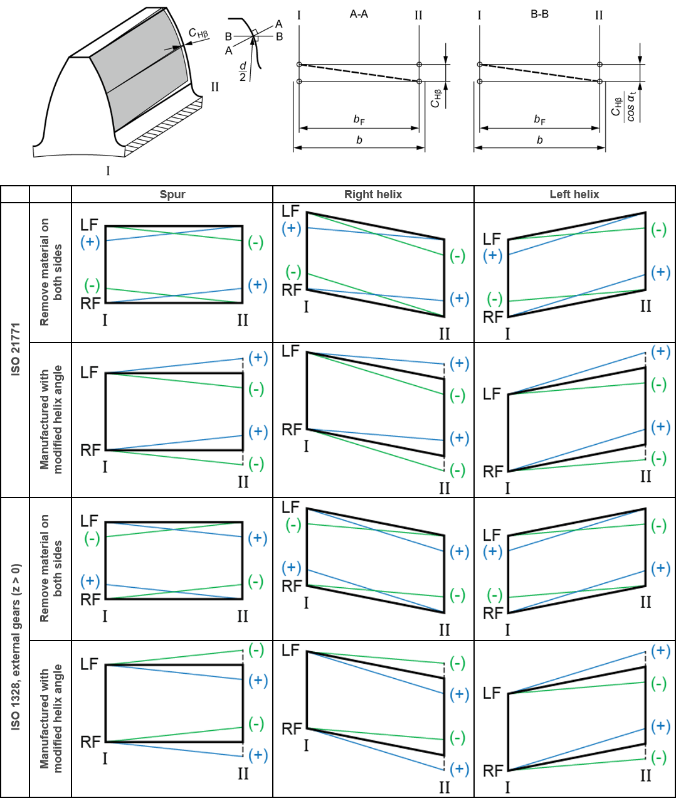
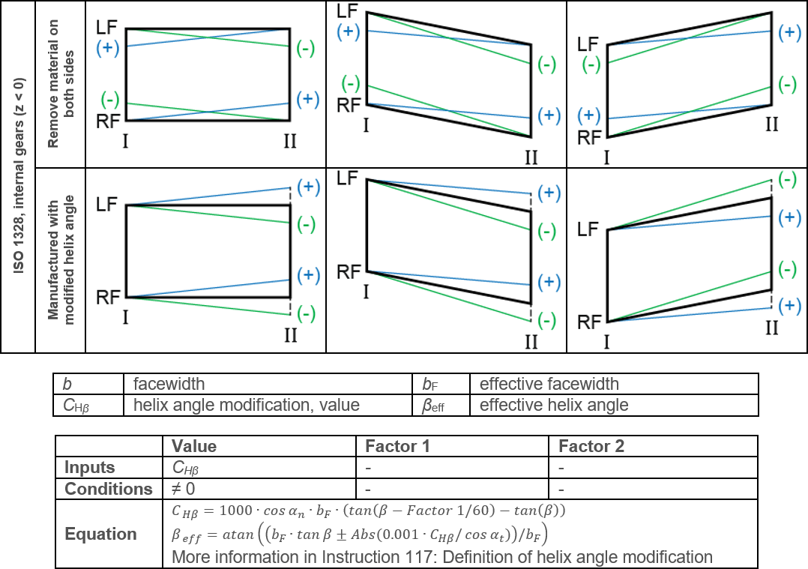

|
|
|


螺旋角修形，平行（值）
这些图（见图 15.49）显示了齿向线图中定义的平行螺旋角修形（值）。图中还显示了 值 设置。该修形应用于齿轮的有效齿宽上。
螺旋角修形的指定方式在 ISO 1328 和 ISO 21771 中以及对于内齿轮和外齿轮有所不同。其他 KISSsoft 设置（ 或 ）也会对修形产生影响（见图 15.49）。


图 15.49：平行螺旋角修形（值），第 1 部分和第 2 部分
Helix angle modification, parallel (value)
These figures (see Figure 15.49) show the parallel helix angle modification (value) as defined in the flank line diagram. The Value setting is also shown. The modification is applied over the effective facewidth of the gear.
The way the helix angle modification is specified differs in ISO 1328 and ISO 21771 and for internal and external gears. Other KISSsoft settings ( or ) also have an effect on the modification (see Figure 15.49).
Figure 15.49: Parallel helix angle modification (value), part 1 and 2